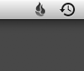

I have constant backups made at home using Apple’s Time Machine (and it has in fact saved my butt more than once), I wanted to have the additional protection of having my files stored safely someplace other than my desk.
I know some folks do off site backup the old fashioned way; by duplicating their existing backup drive and storing it at a friend’s house. (In this scenario, the friend usually trusts you to store a copy of his backup too.)
The theory behind this approach is that the drive stored at your friend’s house should be relatively safe if your house burns down or gets broken into. And hey it’s all “free”.
However. I would never:
- Trust a friend with my personal files (my friend may be trustworthy…but what about his friends? or his wife? or his kids?)
- Burden my friend with that responsibility
- Take on that responsibility myself (do I look stupid to you?)
That whole approach, while “free” seems like a good way to get your files stolen or damaged, get your heart broken, or just ruin a friendship. Besides, how often can you really expect you and your friend to swap drives? What if you miss a week or three ? What if one of you decides to move? Short version: This is a stupid idea.
I also looked into using Amazon S3 (and companion products). S3 is a clever product and is a bargain for any company with vast storage needs. For the home consumer though, the price is prohibitive, and it’s a little clunky. I do like the idea of a web-based back up system that I can use from anywhere.
So, I recently signed up to use Backblaze for my offsite file backup provider. Blackblaze works wonderfully. It has the following killer features:
- Native Mac client
- Cheap
- Secure
- Well thought out and easy to use
Backblaze, at the time of this writing, charges $5 per month, per computer, for unlimited backup over the internet. Purchasing 1 year at a time costs a little less at $50. It would take me 2 to 3 years of service before I covered the cost of a new external hard drive – and external hard drives don’t come with off-site data centers, encryption, or web based file retrieval.
The software installs a control panel (Mac or Windows) and a little menu bar or system tray icon which lets you quickly see status or bring up the preferences.
The control panel itself is very simple, with a big fat “backup now” button and a simple status report.
{kind=link}
Clicking “Settings…” will allow you to throttle the upload speed, schedule backups, or customize which files are backed up.
Backblaze, by default, assumes you want to backup everything except some commonly not backed up files, like caches, virtual disk images, and so forth. You choose what items that you explicitly do not want to back up. I think this approach makes a lot more since, especially for non-technical users. In my case, I omitted my downloaded TV programs (because I throw those away after I watch them anyway), my secondary user account, and some other non critical files (folders full of aliases). It would be nice to have an “advanced” mode to specify rules for backing up certain types of files, or to finely tune the backup schedule – but it’s not necessary.
Blackblaze has a few limitations imposed upon what you can back up. Backblaze limits backed up files to 4GB in size, they will not back up drives mounted over a network, and versions of files are only kept for 30 days. These limitations are perfectly reasonable to me – but Backblaze goes to the trouble of explaining each of their limitations in their FAQ.
Once you install Backblaze you must make your initial back up. This can take a long time, depending upon your network speed.
Obviously a web based backup system is going to require a speedy internet connection. Most home broadband internet providers give you a pretty good download speed, but the upload speed can be poor. Backblaze includes a bandwidth speed test on their site to help you determine how long your first back up will take. Mine took about three weeks, one of those weeks I was traveling and had limited access to the internet – so I’d wager that two weeks over a home DSL connection should be enough for most people.
Once my initial back up completed I immediately tried out a file restore to see how the system works (if you’re running any kind of back up system, you should periodically test that you can recover your files from your backup).
I used the web-based tool to select some arbitrary files from my backup. Backblaze presents you with a pretty nice tree-view browser to select your files. You can choose entire directories, individual files, or mix and match. Once you make your selection, Backblaze tells you you’ll get an email once your ZIP file download is ready. Mine came in about 2 seconds.
Following the link in the email, I discovered that not only does Backblaze keep your files, it keeps a record of the files you’ve restored. The restores are listed by date, can be downloaded again, or deleted if you don’t need them.
The ZIP file I downloaded retained the original directory structure of my hard drive, even though I only selected individual files, that is the zip decompressed to a folder with the name of my hard drive, with a “Users” folder, with my home folder, with a “Documents” folder, etc, etc. This would allow you to pretty easily reconstruct a destroyed system, or at the very least know where to find your files in your backup.
Overall, I’m very happy with this service. I hope I never really need it.